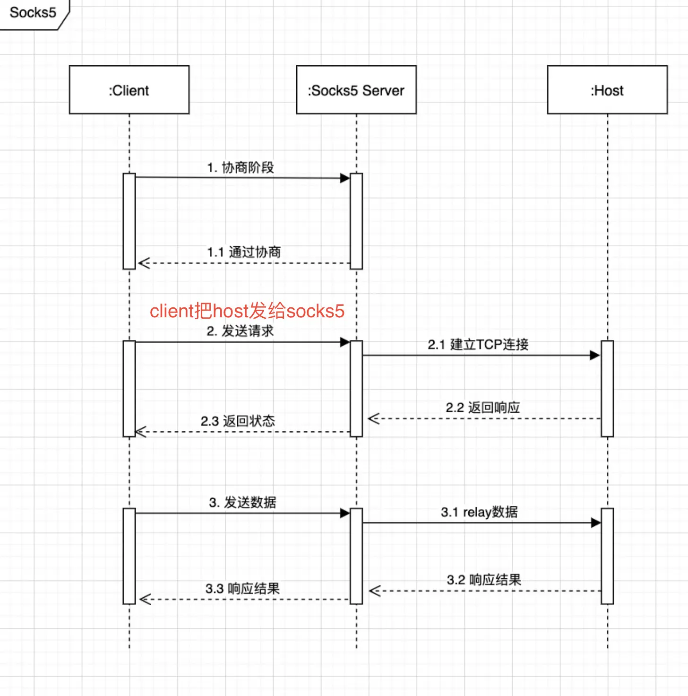
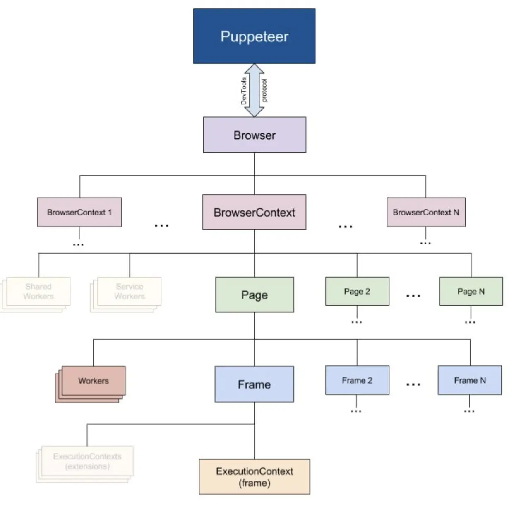
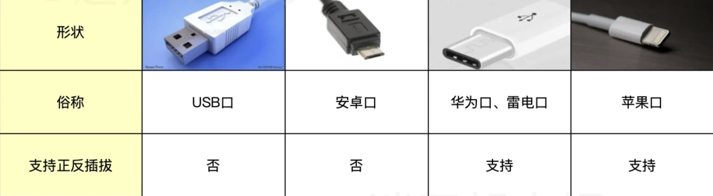

更多工具
AI 导读一分钟导读，先掌握全文主干。
核心观点
- 归档 Docker、GitHub/GitLab、RPC、Nginx 周边、开发工具与各类杂项专题
- 多数子页文末带 2024-2026 更新节，版本线与安全台账实时对齐
- 想找某个具体主题（如 Wireshark/Tesseract/Unity）先从这里导航
关键结论与取舍
- 杂项笔记密度高但按专题各自成册，按需求进子页查询
- 内容以实操记录为主，适合当工作台手册使用
SMTP 发邮件
NewSQL
简述
- NewSQL 在保留关系型数据库事务能力与 SQL 接口的同时，吸收了 NoSQL 的横向扩展性
- NewSQL 生于云时代，天然按分布式架构设计
- CockroachDB
- TiDB
好用的搜索
- whoogle-search-自建google元搜索
- searxng-searx 的活跃社区分支
- SEARX-开源元搜索
- 百度开发者-搜索
- 必应国际版-搜索
- goobe-程序员专用搜索
- mengso-搜索引擎 ，采用 opensearch 方式才能用
- yandex-搜索引擎 ，过滤得不够
- 专搜代码-source
- 专搜代码-search
- 专搜代码-publicwww
chromium安装darkreader
-
github 下载

-
chromium 安装

写好博客/wiki有用参考
- 官方文档/教程
- github 优秀项目的 readme
- 搜索 Stackoverflow「关于某个 Wiki 话题」，前 10~20 个问题；
- 阅读 Google 搜索「关于某个 Wiki 话题」，前 10~100 篇文章；
- 社区优秀的免费和付费书籍（如果有的话）；
- 优秀的出版书籍（如果有的话）
华为手机自定义安装VLC
-
用数据线连接电脑和手机，手机开启 HDB

-
下载 VLC 安装包

-
复制到手机

-
手机 → 实用工具 → 文件管理 → 浏览 → 下载与接收 → 下载管理器 → 点击 apk

小度音箱播放本地音乐
-
进入小度 APP 之后，点击上方配置的小度智能音箱
-
点击进入设备设置。
-
点击进入蓝牙设置。
-
打开音箱蓝牙的开关。
-
再打开手机的蓝牙功能，找到音箱的蓝牙名称。
-
成功连接音箱蓝牙后，打开手机音乐即可在小度音箱中播放
优秀工具
- githubs中文社区
- alist-各种网盘分享 非常优秀，值得试试
- 腾讯兔小巢 快速建立用户反馈系统，值得试试
- wkhtmltopdf-html转pdf 把 html 转化为 pdf
brew install --cask wkhtmltopdf- riptutorial 国内免费分享的书籍示例
- 无google全家桶的chromium
- jenkins
- jenkins-pipeline语法
- jenkins-BlueOcean插件
- drone-轻量级的jenkins
- onedev-java版gogs
- gogs本地代码托管
- gitea本地代码托管
- mermaid（站内详解）
- 中科大镜像
- 阿里云镜像
- 清华大学镜像
- 类似hugo-文档建站工具
- cloc代码统计工具
- 企业管理系统
- Discord社交软件
- Slack社交软件
- odoo以前openERP
- 禅道
- LayaAirH5小游戏引擎
- apijson
- apifox
- 八爪鱼-自动爬虫
- clickhouse-联机分析(OLAP)的列式数据库管理系统(DBMS) ，用来分析现有数据，发现数据规律，商业模式好帮手。
Apache Doris 是由百度贡献的开源 MPP 分析型数据库产品，亚秒级查询响应时间，支持实时数据分析；分布式架构简洁，易于运维，可以支持 10PB 以上的超大数据集；可以满足多种数据分析需求，例如固定历史报表、实时数据分析、交互式数据分析和探索式数据分析等。ClickHouse 是俄罗斯的搜索公司 Yandex 开源的 MPP 架构的分析引擎，号称比事务数据库快 100-1000 倍，团队有计算
小知识
- 国内 DNS 地址
腾讯 DNS
119.29.29.29
182.254.116.116
阿里DNS
223.5.5.5
223.6.6.6
2400:3200::1
百度DNS
180.76.76.76
2400:da00::6666
114DNS（南京信风）
114.114.114.114
114.114.115.115
下一代互联网国家工程中心
240c::6666
240c::6644- 域名解析 IPv6 地址，需要增加 AAAA 记录（IPv4 对应 A 记录）
#采用ipv6
ping -6 host
#mac
ping6 host- utm-虚拟机 debian linux 可以正常启动 Username: debian Password: debian
centos-stream9 root 密码同 mac 的帐户密码
UTM 中一个虚拟机对应一个 .utm 文件；初次创建可能需要 ISO，系统安装完成后，编辑虚拟机属性删除 DVD 光驱设备，就不会再触发安装。
- brave-另一个chromium
- rockylinux-centos开源替代品
- openEuler欧拉OS-linux发行版
- android studio-开发ide
- flutter-跨六个平台 ——为每个平台生成对应的工程目录，从而达到支持多平台目录
- 菜鸟教程-入门必看
- Consul-服务发现和配置
- 优质chrome插件-国内下载离线安装
- fastlane-自动部署工具
- Fundebug-BUG监控-开发者报警
- tesseract-谷歌的ocr开源
- paddle-百度的ocr开源
- PPOCRLabel-百度开源标注系统
- chineseocr_lite-ocr开源
- EasyOCR-基于深度学习的 OCR 开源
- chineseocr-ocr开源
- cvat-开源标注系统
- VoTT-微软开源标注系统（已停止维护）
- labelme-开源标注系统
- labelImg-开源标注系统
- via-开源标注系统
- copilot-AI写代码
- 开源公司介绍-oschina
- Fabric-python自动化运维
- dperf-百度开源压测工具
- traefik-开源的边缘路由器，类似于nginx
- tensorflow-谷歌的人工智能开源
- 极验-交互式验证码
- 720-VR全景制作
- upx-免费程序打包压缩神器
- 蓝湖
蓝湖是一款产品文档和设计图的共享平台，帮助互联网团队更好地管理文档和设计图。蓝湖可以在线展示 Axure，自动生成设计图标注，与团队共享设计图，展示页面之间的跳转关系
- OCSP——在线证书状态协议，目的：验证 SSL 证书的有效性，以确保它未被吊销。
- 腾讯开源
- 百度开源
- 百度AI
- 阿里开源
- 腾讯-开发者社区
- 百度-开发者社区
- 阿里云-开发者社区
- IBM-开发者社区
- gitlab-开源gitlab
- codefever-蒲公英托管平台 ，github开源地址
- gitee-开源中国旗下托管平台
- coding-腾讯投资托管平台
- 工蜂-腾讯代码托管平台
- 云效-阿里云托管平台
- 企业微信添加机器人，实现接收 webhook
- 钉钉添加机器人，实现接收 webhook，钉钉开放平台
- Tapd-让协作更敏捷
- 介绍不需要碎片整理
- 文件系统基于区块分配的设计使得磁盘上出现碎片的概率很低，延迟分配和自动的整理策略解放了操作系统的使用者，在多数情况下不需要考虑磁盘的碎片化；
- 固态硬盘的随机读写性能远远好于机械硬盘，随机读写和顺序读写虽然也有性能差异，但是没有机械硬盘的差异巨大，而频繁的碎片整理也会影响固态硬盘的使用寿命；
- IPv0~IPv3 为早期实验原型；IPv5（ST 流协议）仅停留在实验，从未正式部署
- IPv6 难取代 IPv4：IPv6 回环地址是 0:0:0:0:0:0:0:0 或 ::；IPv4 使用 32bit/4 字节（每组 1 字节、4 组），IPv6 使用 128bit/16 字节（每组 2 字节、8 组）。
- IPv6 协议在设计时没有考虑与 IPv4 的兼容性问题
- NAT 技术很大程度上缓解了 IPv4 地址短缺的问题
- 更细粒度地管控 IPv4 地址并回收闲置的资源
- 谁有能力强制推行大家支持？国家虽有文件要求，但设备厂商、运营商、互联网服务提供商、软件开发者、用户这整个链路中，所有人都把 IPv4 当必选方案，IPv6 当可选方案。所有人都有非常一致的思维：既然 IPv4 100% 能访问，IPv6 不确定因素那么多，那我就直接全部用 IPv4 多好多省事。
- 这里测试ipv6
- tcp 粘包因为是传输字节流，解决办法是协议自定义消息边界
- 消息长度固定
- 消息中有包括长度的字段
- 采用特定字符串作为消息边界
- gperftools（原 Google Performance Tools）
- 它的主要功能就是通过采样的方式，给程序中 CPU 的使用情况进行「画像」，通过它所输出的结果，我们可以对程序中各个函数（得到函数之间的调用关系）耗时情况一目了然。
- 在对程序做性能优化的时候，这个是很重要的，先把最耗时的若干个操作优化好，程序的整体性能提升应该十分明显。
- HMM(隐马尔科夫模型)
- webtorrent-直接看p2p
- 开源工作流
- 开源免费的-pilot
- eoapi-postman开源替代品
- almalinux-centos社区版
- 转换 pdf 为 jpg 图片
# -density 300设置渲染PDF的dpi。
# -trim删除与角像素颜色相同的所有边缘像素。
# -quality 100将JPEG压缩质量设置为最高质量。
magick -density 300 -trim a.pdf -quality 100 a.jpg # IM7 语法，旧版用 convert英特尔的NUC迷你电脑
- 二手服务器主机（无尘机房下来的，质量较好）——费电，响声大
- NUC——性能低
AppImage(Linux apps that run anywhere)
- AppImage 是一个压缩的镜像文件，它包含所有运行所需要的依赖和库文件。你可以直接执行 AppImage 文件不需要安装。当你把 AppImage 文件删除，整个软件也被删除了。你可以把它当成 Windows 系统中的那些免安装的 exe 文件。
jsonl(JSON Lines)
JSON Lines 是一种文本格式，适用于存储大量结构相似的嵌套数据，也常用于日志归档、流式导出等进程间传递结构化数据的场景。它有如下特点：
每一行都是完整、合法的 JSON 值；采用 \n 或 \r\n 作为行分隔符；采用 UTF-8 编码；使用 jsonl 作为文件扩展名；建议使用 gzip 或 bzip2 压缩并生成 .jsonl.gz 或 .jsonl.bz2 文件，以便节省空间。
gitlab
- gitlab → 偏好设置 → 中文
wps
WPS加载网页表格
- 第一步：在网页上找到自己想要的表格，如果不能复制粘贴的话，那么就勾选其网址，然后复制
- 第二步：打开 Excel 表格，在菜单中的数据选项卡中找到「自网站」，然后点击进入。
- 第三步：在弹出的页面中，选择「基本」，然后在下方的空格中粘贴刚刚复制好的网址，点击确定。
- 第四步：稍等一会儿，就会弹出导航器，里面就有刚刚网页上的表格，选择你想要的表格，然后点击下方的加载。
- 第五步：最后表格就会很完美地加载在你的 Excel 中，而且格式都和网页上一样，避免你再次调整格式的麻烦
快速选中多行、多列
- 鼠标选中某个单元格，按住 shift 键，然后鼠标点击另外一个单元格
kcp/quic/enet协议的区别
-
QUIC 是基于 UDP 的传输层协议；HTTP/3 才是构建在 QUIC 之上的应用层协议（其前身为 Google 的 gQUIC 实验）。QUIC 在 UDP 之上实现了可靠传输与 TLS 加密（对标 TCP+TLS+SPDY），特性包括 0-RTT 握手、避免队头阻塞、连接迁移与会话恢复等。相比 KCP 更「重」，目前国内网络游戏直接使用 QUIC 的
-
KCP 只是一套基于无连接的数据报文之上的连接和拥塞控制协议，对底层【无连接的数据报文】没有具体的限制，可以基于 UDP，也可以基于伪造的 TCP/ICMP 等，也可以基于某些特殊环境的非 internet 网络（比如各种现场通信总线）。KCP 协议就是在保留 UDP 快的基础上，提供可靠的传输，应用层使用更加简单。
-
enet：有 ARQ 协议。收发不用自己实现，提供连接管理、心跳机制。支持人数固定。自己实现跨平台。支持可靠无序通道。没有拥塞控制。线程不安全
理解socks5协议的工作过程和协议细节

全球ip地址查询
luminati中国
- Luminati 是全球最大的代理服务，全球拥有 3500 万 IP 的住宅代理网络和零编码代理管理接口。爬取任何网络数据，从不被屏蔽，从不被掩盖。Luminati 是道德代理网络（现品牌名为 Bright Data，爬取使用前注意遵守目标站点条款）。
无界面浏览器
- playwright-微软出品 (https://github.com/microsoft/playwright )
- puppeteer-谷歌出品

- phantomjs-停止开发
openwrite-次编写markdown多个平台发布
检测vps的ip是否被封，有人检测到http代理或socks5,则会临时被封几分钟
-
中国站长工具 ，同时采用国内及国外 ping，如果都不行，则肯定是 VPS 问题，否则就极可能被封。
-
traceroute（linux/mac）、tracert（windows）xxx 追踪一下
-
查看路由表
- mac 系统
netstat -r Routing tables- linux 系统
route -n- windows 系统
route print
各大厂商的ocr接口
- 华为没有免费的
- 阿里和腾讯都有免费额度
- 百度的效果最好
- Windows 10/11 自带 OCR API 接口
https://cloud.tencent.com/document/product/866/35945
https://help.aliyun.com/document_detail/330957.html
https://ai.baidu.com/ai-doc/REFERENCE/Ck3dwjhhu#%E8%8E%B7%E5%8F%96-access-token
开源代码库可以通过关键字在 GitHub 中查找；教程博客可以在 Medium 这样的平台上搜索；API 则可在官方文档翻阅
埋点
- 是数据采集领域（尤其是用户行为数据采集领域）的术语，指的是针对特定用户行为或事件进行捕获、处理和发送的相关技术及其实施过程。比如用户某个 icon 点击次数、观看某个视频的时长等等。埋点的技术实质，是先监听软件应用运行过程中的事件，当需要关注的事件发生时进行判断和捕获
便宜的海外服务器
- 腾讯云 孟买——特惠
代码相似度检查NiCad
ocr错别字都是形近字，根据语义能否提示错别字?
常见usb接口

阿里云智能插件，仅支持java
Antlr - 强大的开源语法分析工具
HAR
HAR（HTTP 档案规范），是一个用来储存 HTTP 请求/响应信息的通用文件格式，基于 JSON。这种格式的数据可以使 HTTP 监测工具以一种通用的格式导出所收集的数据，这些数据可以被其他支持 HAR 的 HTTP 分析工具（包括 Firebug、httpwatch、Fiddler 等）所使用，来分析网站的性能瓶颈。
开源的聊天应用RocketChat-替代微信
toml文件格式
开源替换 Google Analytics-umami 自托管、注重隐私的网站流量分析，可作为 Google Analytics 的轻量替代
次世代图片格式 JPEG XL、AVIF、WebP 2
- AVIF 有损压缩效果最好，无损压缩非常糟糕。编码速度很慢。
- JPEG XL 无损压缩效果最好，有损压缩较 AVIF 有些许差距。编码速度快。
- WebP 2（google/webp2 实验项目）已停止开发：无损表现不错但有损不稳定；实际主线仍是 AVIF 与 JPEG XL